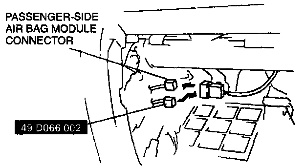
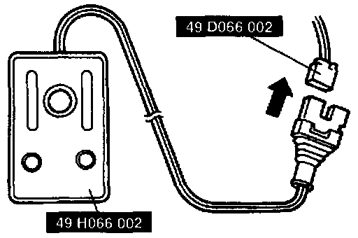

Deployment Procedures For Inside of Vehicle
WARNING: A live (undeployed) air bag module may accidentally deploy when it is disposed of and cause serious injury. Do not dispose of a live (undeployed) air bag module. If the SSTs (Deployment Tool and Harness Adapter) are not available, consult the nearest Mazda representative for assistance.NOTE: When disposing of a deployed air bag, refer to AIR BAG MODULE DISPOSAL PROCEDURES. (Refer to AIR BAG MODULE DISPOSAL PROCEDURES.)
Deployment Procedures for Inside of Vehicle
1. Inspect the SST (Deployment Tool). (Refer to INSPECTION OF SST (DEPLOYMENT TOOL).)
2. Move the vehicle to an open space, away from strong winds, and close all of the vehicle's doors and windows.
3. Turn the ignition switch to LOCK.
4. Disconnect the negative battery cable and wait for more than 1 minute to allow the backup power supply of the SAS control module to deplete its stored power.
Passenger-side air bag module
1. Remove the glove compartment.
2. Disconnect the passenger-side air bag module connector.

3. Connect the SST (Harness Adapter) to the passenger-side air bag module as shown in the figure.

4. Connect the SST (Deployment Tool) to the SST (Harness Adapter).
5. Connect the red clip of the SST (Deployment Tool) to the positive battery terminal and the black clip to the negative battery terminal.
6. Verify that the red light on the SST (Deployment Tool) is illuminated.
7. Make sure all persons are standing at least 6 m {20 ft} away from the vehicle.
8. Press the activation switch on the SST (Deployment Tool) to deploy the air bag module.